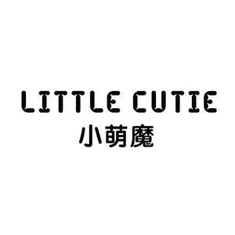

Trade Mark Journal No.2025/021 23 May 2025
UK00004169658 6 March 2025 (8,10,20,26)

- Class 8
- Kitchen knives; Paring knives; Blades for knives; Blades for electric razors; Disposable razors; Electric shavers; Razor knives; Hair straightening irons; Hand implements for hair curling; Manicure implements; Nail clippers; Nail nippers; Pedicure implements; Artificial eyelash tweezers; Electric eyelash curlers; Eyelash curlers; Hand-operated apparatus for the cosmetic care of eyebrows; Scissors; Tweezers; Depilation appliances.
- Class 10
- Abdominal belts; Sanitary masks; Gloves for use during operations; Surgical masks; Feeding bottles; Condoms; Condoms for hygienic purposes; Surgical apparatus and instruments for dental use; Cushions for medical purposes; Electric esthetic massage apparatus; Esthetic massage apparatus; Sex toys; Ear picks; Massage apparatus; Lice combs; Audiometers; Sphygmotensiometers; Glucose meters.
- Class 20
- Storage baskets [furniture]; Bathroom furniture; Air mattresses; Cushions; Mattress toppers; Coat pegs [wall mounted hooks] non-metallic; Coathooks; Hooks (Clothes -) of non-metallic materials; Hooks for clothing; Curtain hooks; Make-up mirrors for the home; Make-up mirrors for travel use; Mirrors for use in powder compacts; Personal compact mirrors; Hooks (Door -) of non-metallic materials; Mobiles [decoration]; Works of art of plastic; Furniture; Bag hangers, not of metal; Clothes hangers.
- Class 26
- Hair bands; Decorative articles for the hair; Hair pins; Hair nets; False hair; Hooks [haberdashery]; Spangles for clothing; Wigs; Shoe buckles; Boxes for needles; Ornamental novelty badges [buttons]; Bows for the hair; Embroidery needles; Fittings for lingerie [haberdashery]; Decorative charms for cellular phones; Hair grips; Plaited hair; Hatbands; Bobby pins; Crochet needles.
Xiaoquan Huang
Representative: SHENZHEN ZHONG GANGXING SHUNLI INTELLECTUAL PROPERTY AGENCY CO., LTD